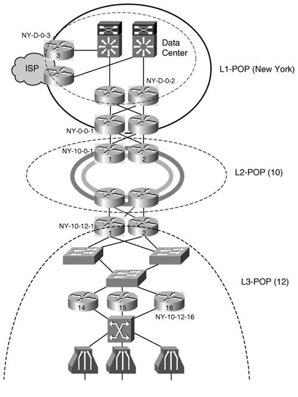
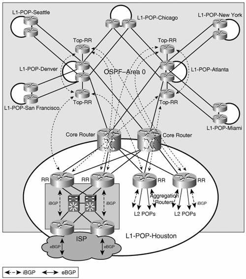

Basic Services Design and ImplementationRTPCom's IPv6 deployment strategy was set for dual stack, a framework that now shapes the design of all IPv6 services. The foundation of the deployment is the addressing plan. Addressing PlanRTPCom secured the 2600:A000::/24 prefix from the American Registry for Internet Numbers (ARIN) for its IPv6 nationwide deployment. It made a strong business case for such a large address space based on its current customer base growth rate. RTPCom's ARIN record for this allocation is shown in Table 14-3.
In designing the addressing structure of the IPv6 deployment and service, RTPCom decided to use the following constraints:
For administrative purposes, RTPCom's network was divided in two areas: East and West. Three bits are reserved to identify each L1 POP in each area. Four bits are reserved to identify the L2 POPs, and the subsequent 6 bits are used to identify the L3 POPs. Table 14-4 summarizes the addressing scheme that will be implemented by RTPCom.
As an example, the prefixes used for the L1 POPs and their respective subdivisions are shown in Table 14-5.
The first prefix in both East (2600:A000::/28) and West (2600:A080::/28) ranges was reserved for infrastructure purposes. The 2600:A000::/28 prefix is used in the manner described in Table 14-6.
The 2600:A080::/28 is reserved for further growth needs. These prefixes will be protected against outside reach. Unicast ConnectivityUnicast connectivity between customers and between customers and the ISP provides the underlying service upon which all other services are built. As it was mentioned earlier, RTPCom decided to deploy IPv6 in dual-stack mode, unlike the PPP/L2TP-based model used for the IPv4 service. RTPCom will switch the customer IPv6 traffic at layer 3 throughout its network, as depicted in Figure 14-8. Router naming conventions in RTPCom's network are as follows:
The routers that are used in the following sections to exemplify the implementation of the design concepts are identified based on the naming convention in Figure 14-9. Figure 14-9. Example of Router-Naming Convention Within the New York L1 POP RTPCom's addressing scheme presented earlier provides the prefixes relevant to the routers identified in Figure 14-9:
These prefixes are used for service purposes, while the 2600:A002:A::/36 prefix range is used for infrastructure purposes. From a routing perspective, the IPv6 deployment matches the IPv4 for the most part. The same routing protocols are operating in the same areas of the network. There is, however, a significant difference in that the IPv4 infrastructure is not aware of prefixes outside of it. RTPCom provides virtual pipes between the ISPs and the customers over its self-contained infrastructure. RTPCom's network is aware of the customer's IPv6 traffic, so it will have to carry prefixes used for the services provided by the content or Internet service providers. AccessAt the access layer, it is important to note that the same virtual links (VLANs for FTTH and PVCs for ADSL) used to provide IPv4 address are used to provide IPv6 access, too. For IPv4 the access router merely bridges the customer initiated PPPoE sessions into an L2TP tunnel, although for IPv6, the access router represents the layer 3 gateway for the customer. Implementing this hybrid access model is straight forward on the FTTH interfaces. On the ATM interfaces, the access router has to know to bridge the IPv4 traffic and to route the IPv6. The IPv6 RBE feature will be used for this purpose. RTPCom is in this case responsible for provisioning the customer and it decided to use the following two mechanisms:
Note RTPCom considered a PPP-based solution at the access layer where PPPoE sessions initiated by the customer would be terminated by the access router and the traffic IP switched through the rest of the network. The advantage of this approach is that it allows RTPCom to leverage PPP for authenticating and authorizing the customer with the help of a RADIUS server. This would simplify provisioning by centralizing it in the RADIUS server. RTPCom decided, however, to keep the deployment simple and avoid the additional encapsulation even if that might imply more involved provisioning. Router NY-10-12-16 in Figure 14-9 provides ADSL access and has the relevant configuration shown in Example 14-1. Example 14-1. ADSL Access Router Configuration
Note The DUID of subscriber 100 CPE is 00030001000BBFAA7400 and 2600:A002::1/64 is the address of the DNS server in the New York L1 POP. No routing protocol is running between the access router and the CPE while OSPFv3 is running between the L3 POP routers. The following three points have to be considered:
The relevant configuration that meets these constraints is shown in Example 14-2. Example 14-2. Access Router OSPFv3 Configuration
Interfaces GigabitEthernet6/1 and 6/2 link the access router NY-10-12-16 to the routers that connect this L3 POP to its L2 upstream POP. Edge and CoreThe L2 POPs aggregate the L3 POPs and they do not run any specific features other than OSPFv3 and iBGP. One of the two L2 POP routers that interface with the New York L1 POP is named NY-10-0-1; the other is NY-10-0-2. The relevant routing points in this case are as follows:
Router NY-10-0-1's IPv6 relevant configuration is shown in Example 14-3. Example 14-3. L2 POP Router NY-10-0-1 Configuration
The TenGigabitEthernet9/1 and 9/2 interfaces provide the uplink to L1 POP, while the SRP1/1 interface provides the link to the rest of the routers in its L2 POP. IPv6 prefixes redistributed from iBGP into OSPFv3 are marked with tag 100. When NY-10-0-1 is redistributing the external type 2 prefixes from OSPFv3 into iBGP, the prefixes with tag 100 are dropped. This avoids the loop created by the redistribution between the two routing protocols. It is interesting to observe that even though NY-10-0-1 already peers with the L1 POP routers over IPv4, RTPCom decided to enable separate peering over IPv6. Another option would have been to simply add the IPv6 address family to the BGP processes and activate the IPv4 neighbors. Despite its apparent redundancy, RTPCom opted for the approach described in Example 14-3 for two reasons:
RTPCom assumes a certain level of risk because it uses the same routers as IPv4 and IPv6 route reflectors (RRs). The risk is further enhanced because in this design, the RRs are in the forwarding path (a risk assumed for IPv4, as well). Based on its operational experience with the current infrastructure, RTPCom is comfortable with this design. It is also studying the option of deploying dedicated RRs in each L1 POP. Considering the redundancy in the RR design, a migration to this alternate design would not imply a downtime for RTPCom's network. The L1 routers are running OSPFv3 in area 0 for IGP. At the same time, the L1 routers that provide access to the core for the L1 POP data centers and for the L2 POPs are all part of the iBGP infrastructure shown in Figure 14-10. Figure 14-10. RTPCom Backbone iBGP DesignThe L1 routers providing access for the L1 POP data centers and for the L2 POPs are also acting as route reflectors for the IPv6 service. They in turn peer with the two pairs of second-level Top-RRs in L1-Denver and L1-Atlanta. This hierarchical RR design provides scalability for RTPCom's network core. The prefixes in the core of the network that are handled by OSPFv3 are redistributed into BGP but not the other way around. Under this design, the relevant configuration elements for NY-0-0-1 are shown in Example 14-4. Example 14-4. IPv6 Routing Configuration of NY-0-0-1
The address of the Top-RRs are 2600:A001:0:F000::2 (Atlanta) 2600:A00A:0:F000::2 (Denver). The Top-RRs shown in Figure 14-10 are dedicated to the IPv6 deployment and were installed in L1-Denver and L1-Atlanta POPs in addition to the existent IPv4 RRs. RTPCom considers the investment in the additional equipment worthwhile for the benefit of further minimizing the interaction between the IPv4 and IPv6 services. With the above configuration in place, RTPCom established unicast connectivity between its customers and some services, such as DNS and content hosting/storage, which can already operate. On the other hand, considering the new architecture used for IPv6, RTPCom has the responsibility to control user access based on its subscription. With the basic IPv6 unicast service, the user can reach other RTPCom customers but should not have access to the Internet. To enforce this policy, RTPCom applies an IPv6 filter on the subscriber line at the access layer, as shown in Example 14-5. Example 14-5. User Access Control Configuration
Access list Basic-Access blocks access to the infrastructure address space (2600:A000::/28 and 2600:A080::/28), and allows access to the other RTPCom customers but not beyond that. This filter is modified based on the services paid for by the user. Service Rollout PlanTo safeguard the stability of its network, RTPCom intends to enable it for IPv6 unicast connectivity in phases. In the first phase, it will enable IPv6 in the backbone. In the subsequent phases, it will move toward the access layer based on customer demands. RTPCom's deployment will precede demand in the major metropolitan areas where the service will be aggressively advertised. The service rollout steps are summarized in Table 14-7.
Steps 2 and 3 can be repeated for other L2 and L3 POPs based on customer demand for service. By the time the customer is provided access, the DNS and content resources are already installed in the data centers. DNS and Content Hosting/StorageThe DNS and content hosting/storage resources are installed in the data center of the L1 POPs. The unicast service enables the IPv6 customers to reach these resources and take advantage of these two services. The DNS server addresses are provided to users via DHCP. The addresses for the content hosting/storage servers are available on RTPCom's service web pages where subscribers are provided with all the information necessary to use these services. Internet AccessTo provide its customer with Internet access service, RTPCom partnered with USInternet, an ISP similar to EuropCom described in Chapter 13. USInternet will provide IPv6 Internet access in addition to its existent IPv4 Internet access offering. It also packages e-mail services together with the Internet access subscription. Like the other ISPs that provide IPv4 Internet access services to RTPCom's customers, USInternet has two routers collocated with RTPCom's edge routers in the data centers of the L1 POPs. These two routers aggregate the LNS routers that are dedicated to USInternet. Open Shortest Path First (OSPF) is used for routing purposes between the LNS, RTPCom edge and ISP edge routers. An interior gateway protocol (IGP) is seen as a simpler solution than the use of eBGP mainly because RTPCom does not need to use its global addresses and its autonomous system for the service. RTPCom can be viewed as merely a virtual access layer for the ISPs it partners with. In the IPv6 service design, RTPCom plays a more involved role. It now routes the customer traffic throughout its network, it is responsible for providing addresses to customers and have them globally routed under its own autonomous system number. In this case, the use of just and IGP is not feasible. For this reason USInternet peers with the RTPCom at its L1 POPs through eBGP and the following constraints shape the configuration of NY-D-0-3:
The implementation of these constraints is shown in the configuration Example 14-6. Example 14-6. IPv6 eBGP Configuration of Router NY-D-0-3
The addresses of the data center RRs are 2600:A002:D0:1100::1 and 2600:A002: D0:2100::1. USInternet's autonomous system number is 500. The eBGP peering is done through the link-local addresses on the link between RTPCom and the USInternet. Route map Block-Infra is used to stop the infrastructure prefixes 2600:A000::/28 and 2600:A080::/28 from being advertised outside RTPCom's network. Note The configuration shows the fact that the eBGP peering is done through link-local addresses. Chapter 2, "An IPv6 Refresher," describes the benefits of using this option. The important thing is to have a set of rules that make the link-local addresses of the peer deterministic. The details of how the link-local addresses are being assigned will not be discussed here because they were presented in a similar example in Chapter 13. These changes made on the ISP-facing routers open RTPCom's network to the wider IPv6 Internet. All of its customers could in principle access the Internet once they have IPv6 access to the RTPCom network. However, the service is controlled with the help of access lists. When a user decides to add Internet access to his service subscription, the access list applied to its access line is changed from Basic-Access to Internet-Access: ipv6 access-list Internet-Access deny ipv6 any 2600:A000::/28 deny ipv6 any 2600:A080::/28 permit ipv6 any any In the first phase of the IPv6 deployment, the services offered are contained within RTPCom's network or within a data center on USInternet's premises (e-mail services, for example). This way the services are easier to manage, and the corresponding business model is not complex. The Internet access service is turned on in a subsequent phase of the deployment when interest for it becomes relevant. The Internet access service rollout steps are summarized in Table 14-8. Basic connectivity is assumed to add Internet access.
| |||||||||||||||||||||||||||||||||||||||||||||||||||||||||||||||||||||||||||||||||||||||||||||||||||||||||||||||||||||||||||||||||||||||||||||||||||||||||||||||||||||||||||||||||||||||||||||||||||||||||||||||||||||||||||||||||||||||||